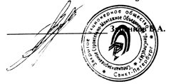

|
УТВЕРЖДЕН
Решением Заседания Совета директоров
Закрытого акционерного общества
Специализированное Строительно-Монтажное Объединение "ЛенСпецСМУ"
от 24 октября 2002 года
Протокол № 39
Председатель Совета директоров
Заренков В.А.

Устав Товарищества собственников жилья"Серебрянка"г. Санкт-Петербург
- 2002 -
1. Общие положения.1.1. Товарищество собственников жилья "Серебрянка", именуемое в дальнейшем "Товарищество", создано на основании решения Совета директоров Закрытого акционерного общества Специализированное Строительно-Монтажное Объединение "ЛенСпецСМУ" от 24 октября 2002 года (Протокол № 39). именуемого в дальнейшем "ЛенСпецСМУ", создающего кондоминиум, расположенный по адресу: г. Санкт-Петербург, аллея Поликарпова, д. 10. корп. 1-3, на основании распоряжения губернатора Санкт-Петербурга от 13.02.2001 г. № 172-р "О проектировании и строительстве жилого дома со встроенными помещениями по адресу: Приморский административный район, бывший Комендантский аэродром, квартал 7В, на пятне корп. 38" и в соответствии с Законом РФ "О товариществах собственников жилья", Законом РФ "Об основах федеральной жилищной политики" и иными правовыми актами РФ и Санкт-Петербурга. 1.2. Настоящий Устав регламентирует порядок взаимоотношения домовладельцев - собственников жилых и нежилых помещений, расположенных в доме, построенном по адресу: г. Санкт-Петербург, аллея Поликарпова. д 10 корп 1-3, в процессе владения, пользования и распоряжения жилыми и нежилыми помещениями, управления и эксплуатации комплекса недвижимого имущества (далее - кондоминиум). 1.3. Членами Товарищества являются собственники жилых и нежилых помещений, а также другого недвижимого имущества в жилищной сфере, непосредственно связанного с жилым домом и являющегося их обшей собственностью, при натичии их добровольного волеизъявления, выраженного письменно (путем подачи заявления), либо устно (на общем собрании), а также иным, не противоречащим действующему законодательству способом. 1.4. Передача прав собственности на помещения во вновь созданном жилом доме приобретателям по договору возможна лишь после государственной регистрации кондоминиума органами, осуществляющими регистрацию прав на недвижимое имущество, а также регистрации Товарищества в установленном порядке. 1.5. Товарищество является юридическим лицом, с момента его регистрации в органах государственной власти в установленном порядке, имеет самостоятельный баланс, печать, угловой и другие штампы со своим наименованием, расчетный и иные счета в банках. 1.6. Товарищество является некоммерческой организацией и вправе осуществлять хозяйственную деятельность для достижения целей, ради которых оно создано, и соответствующую этим целям. 1.7. Товарищество осуществляет свою деятельность за счет вступительных и иных взносов, обязательных платежей своих членов, а также иных источников, предусмотренных Уставом и действующим законодательством. 1.8. Товарищество не отвечает по обязательствам своих членов перед государством и другими субъектами, а также по обязательствам друтих субъектов перед членами Товарищества. Товарищество не отвечает по обязательствам государства. Государство не отвечает по обязательствам Товарищества. Государство, являясь членом Товарищества, несет бремя содержания своей доли собственности наравне с прочими членами. Члены Товарищества не несут ответственности по обязательствам Товарищества. 1.9. Товарищество отвечает по своим обязательствам на основании и в порядке, определенном законами, иными правовым актами и Уставом, от своего имени приобретает имущественные и неимущественные права и обязанности, выступает истцом и ответчиком в суде. 1.10. Товарищество вправе выступать учредителем или соучредителем юридических лиц, в том числе ассоциаций и союзов Товариществ. 1.11. Полное наименование Товарищества на русском языке: Товарищество собственников жилья "Серебрянка". Краткое наименование на русском языке: ТСЖ "Серебрянка". 1.12. Местонахождение Товарищества: г. Санкт-Петербург, аллея Поликарпова, д. 10. корп. 1.
2. Предмет и цели деятельности Товарищества.2.1. Товарищество создается "ЛенСпецСМУ" во вновь создаваемом кондоминиуме в соответствии с Гл. VI Закона РФ "О товариществах собственников жилья" с целью обеспечения эксплуатации многоквартирного дома, пользования жилыми и нежилыми помещениями, общим имуществом его членов, реализации имущественных прав на объекты общего пользования, связанных с их эксплуатацией и содержанием, особых прав "ЛенСпецСМУ", кооперации и координации усилий членов Товарищества, направленных на осуществление этих целей. 2.2. Предметом деятельности Товарищества являются:
2.3. Товарищество осуществляет следующие виды деятельности:
2.4. Товарищество осуществляет права и несет обязанности, установленные ст. 29, 30, 31 Закона "О товариществах собственников жилья", в соответствии с предметом и целями деятельности. 2.5. Если осуществление тех или иных видов работ и услуг требуют получения специального разрешения (лицензии), то они выполняются после получения в установленном законом порядке соответствующей разрешительной документации.
3. Средства Товарищества.3.1. Средства Товарищества состоят из:
3.2. По решению общего собрания Товарищество может часть свободных денежных средств помещать в облигации, сертификаты, акции и другие ценные бумаги. 3.3. По решению общего собрания Товарищество может образовывать специальные фонды, расходуемые в соответствии с целями и предметом деятельности Товарищества. Порядок образования и расходования специальных фондов определяется положением, утверждаемым общим собранием. 3.4. По решению общего собрания членов Товарищества доход, полученный в результате хозяйственной деятельности Товарищества, используется для оплаты общих расходов или направляется в специальные фонды, расходуемые на цели, предусмотренные в Уставе. Дополнительный доход может быть направлен на иные цели деятельности Товарищества, предусмотренные законом и Уставом. Доходы Товарищества не могут распределяться между его членами.
4. Права и обязанности членов Товарищества.4.1. Членами Товарищества являются собственники (физические и юридические лица) каждому из которых на правах частной, государственной, муниципальной или иной собственности принадлежат жилые (квартиры, комнаты) или нежилые помещения, включая пристроенные, а также другое имущество, непосредственно связанное с жилым домом, являющееся общей собственностью домовладельцев и следующее судьбе права домовладельца на жилое или нежилое помещение, находящееся в кондоминиуме 4.2. Член Товарищества имеет право: 4.2.1. Участвовать лично или через своего представителя в деятельности Товарищества на основаниях и в порядке, предусмотренных Уставом Товарищества; 4.2.2. Избирать и быть избранным в органы управления и контроля Товарищества, а также присутствовать на заседаниях правления с правом совещательного голоса; 4.2.3. Вносить предложения по вопросам, относящимся к сфере деятельности органов управления и контроля товарищества, а также должностных лиц; 4.2.4. По своему усмотрению владеть, пользоваться и распоряжаться принадлежащим ему помещением в пределах ограничений, устанавливаемых законодательством РФ, Уставом и решениями общего Собрания, не противоречащими законам и иным правовым актам РФ, в том числе дарить, передавать по наследству, продавать, передавать в управление другим лицам, сдавать в аренду, в безвозмездное пользование, а также совершать иные сделки не противоречащие действующему законодательству; 4.2.5. Ежеквартально по требованию получать бесплатно информацию о состоянии лицевого счета; 4.2.6. На возмещение за счет средств Товарищества расходов, понесенных в связи с предотвращением нанесения ущерба объектам общей собственности членов Товарищества; 4.2.7. Иные права, предусмотренные Уставом, решениями общего Собрания и действующим законодательством. 4.3. Член Товарищества обязан: 4.3.1. Соблюдать требования настоящего Устава, законы и иные правовые акты в жилищной сфере; 4.3.2. Выполнять решения общего собрания и правления, принятые в пределах их компетенции; 4.3.3. Уплатить вступительный взнос в размере, определяемом общим Собранием; 4.3.4. Своевременно вносить установленные Товариществом платежи в размерах и порядке, предусмотренных нормативно-правовыми актами, учредительными документами и решениями общего Собрания (Обязанность нести расходы, связанные с управлением, содержанием и эксплуатацией кондоминиума лежит в равной мере на всех домовладельцах, в том числе не вступивших в члены Товарищества); 4.3.5. Соблюдать Правила пользования жилыми и нежилыми помещениями и содержания объектов общего пользования Товарищества, а также требования санитарных, технических и других установленных норм; 4.3.6. Сообщить Правлению в течение одного месяца об изменении фамилии, имени, отчества, номера и серии паспорта (реквизитов юридического лица) члена Товарищества; 4.3.7. В случае продажи принадлежащего ему жилого или нежилого помещения, предоставить покупателю в дополнение к документам, предусмотренным гражданским законодательством, копию Устава Товарищества и сведения о своих обязательствах перед Товариществом и иные сведения, предусмотренные ст. 13 Закона РФ "О товариществах собственников жилья"; 4.3.8. Выполнять иные обязанности, вытекающие из Устава и решений общего Собрания. 4.4. Член Товарищества, предоставляющий право пользования принадлежащим ему помещением иным лицам, обязан:
4.5. По основаниям, предусмотренным действующим законодательством, при перемене собственника жилого и/или нежилого помещения, могут только в совокупности переходить следующие права, связанные с участием в Товариществе и определяющие членство в нем:
4.6. Лицо, приобретающее помещение в собственность, является правопреемником предыдущего собственника, с момента перехода права собственности и при наличии соответствующего волеизъявления, становится членом Товарищества и обязано: 4.6.1. Сдать в Правление в 10-ти дневный срок следующие документы:
4.6.2. Ознакомиться с Уставом и иными документами Товарищества а также соблюдать содержащиеся в них требования, нести иные обязанности члена Товарищества. 4.6.3. Переоформить на свое имя все договоры, заключенные предыдущим собственником с Товариществом и не подлежащие расторжению по основаниям, предусмотренным договорами или Уставом. 4.7. Временное отсутствие домовладельца либо фактическое не использование принадлежащих ему помещении, а также отказ от пользования общим имуществом и объектами ограниченного пользования не являются основанием для освобождения домовладении полностью или частично от участия в общих расходах на содержание и ремонт общего имущества в кондоминиуме.
4.8. Собственники жилых и нежилых помещений обязаны обеспечить беспрепятственный доступ к техническому оборудованию, приборам учета и т.п., находящимся в принадлежащих их помещениях и
обслуживающим более одного помещения. 4.9. В случае систематического нарушения правил пользования, содержания и эксплуатации жилищного фонда (жилые нежилые помещения, имущество обслуживающего назначения и придомовая территория), ведущего к порче или разрушению кондоминиума, по решению общего Собрания к домовладельцу могут быть применены следующие меры ответственности:
5. Права и обязанности Товарищества.5.1. Товарищество имеет право:
5.2. Товарищество обязано:
5.3. Товарищество несет ответственность по своим обязательствам своим имуществом.
6. Общее собрание.6.1. Высшим органом управления Товарищества является общее собрание членов Товарищества. 6.2. На общее Собрание приглашаются все члены Товарищества. Каждый член Товарищества обладает числом голосов, пропорционально общей площади помещений, находящихся в его собственности в данном доме из расчета 10 кв. метров - один голос, при определении числа голосов у члена Товарищества излишки площади до пяти кв. метров отбрасываются, а равный или больший пяти дает один дополнительный голос. 6.3. К исключительной компетенции общего собрания относится: 6.3.1. Внесение изменений и дополнений в Устав Товарищества; 6.3.2. Утверждение регламента общего Собрания и положений о выборных органах Товарищества; 6.3.3. Решение о реорганизации и ликвидации Товарищества; 6.3.4. Принятие решений об отчуждении, о сдаче в аренду, залоге или передаче иных прав на имущество Товарищества домовладельцам или третьим лицам; предоставление сервитутов или иных прав пользования общим имуществом в кондоминиуме; 6.3.5. Принятие решений о приобретении, строительстве, реконструкции, в том числе с расширением (надстройкой), возведении хозяйственных построек и других сооружений, ремонте недвижимого имущества в кондоминиуме; 6.3.6. Принятие решения о получении заемных средств, включая банковские кредиты; 6.3.7. Определение направлений использования дохода от хозяйственной деятельности Товарищества; 6.3.8. Введение ограничений на использование общего имущества; 6.3.9. Избрание Правления и ревизионной комиссии; 6.3.10. Выборы иных органов (комиссий, рабочих групп и т. п.); 6.3.11. Поручение выборным органам Товарищества решения отдельных вопросов; 6.3.12. Утверждение годового финансово-хозяйственного плана и отчета о его выполнении; 6.3.13. Установление обязательных платежей и взносов членов Товарищества; 6.3.14. Образование специальных фондов Товарищества, в том числе резервного, на восстановление и проведение ремонта кондоминиума и оборудования; 6.3.15. Рассмотрение жалоб на правление, председателя правления и комиссии Товарищества; 6.3.16. Принятие и изменение по представлению председателя правления правил внутреннего распорядка обслуживающего персонала Товарищества, положения об оплате их труда; 6.3.17. Определение размера вознаграждения членам правления Товарищества; 6.3.18. Утверждение представляемых Правлением Правил пользования объектами общей собственности членов Товарищества и имуществом Товарищества; 6.3.19. Утверждение представляемого Правлением Положения об осуществлении текущей деятельности Товарищества; 6.3.20. Утверждение Положения об общей долевой собственности членов Товарищества; 6.3.21. Утверждение реестра долей общей собственности членов Товарищества: 6.3.22. Утверждение реестра объектов общей собственности членов Товарищества, передаваемых в пользование членам Товарищества на неконкурсной основе; 6.3.23. Принятие решения о получении кредитов и их обеспечение и установление целевого назначения и условий возврата кредитов, а также иных решений в рамках хозяйственной деятельности, направленной на получение прибыли связанных с возникновением имущественных обязательств Товарищества перед контрагентами или передачей имущества Товарищества на временной или иной основе (в том числе в качестве уставного капитала) другим юридическим лицам; 6.3.24. Утверждение сделок и иных действий, влекущих возникновение обязательств Товарищества которые превышают полномочия, предоставленные Правлению в соответствии с ранее принятым бюджетом Товарищества; 6.3.25. Принятие решения о поручении Правлению приобрести в общую долевую собственность членов Товарищества жилое или нежилое помещение; 6.3.26. Утверждение отчетов Правления о выполнении бюджета и плана хозяйственной деятельности Товарищества за прошедший финансовый год; 6.3.27. Утверждение отчетов Правления о выполнении поручений общего Собрания и текущих работ по содержанию общего имущества членов Товарищества; 6.3.28. Утверждение отчетов ревизионной комиссии: 6.3.29. Принятие решения об учреждении или участии в организациях, предусмотренных Уставом и решениями общего Собрания Товарищества; 6.3.30. Установление оснований и меры ответственности за невыполнение членами Товарищества обязательств по своевременному внесению платежей и сборов, а также за нарушение положений Устава и требований, принятых общим Собранием правил и инструкций; 6.3.31. Принятие решений о передаче в пользование на конкурсной основе объектов общей собственности третьим лицам или членам Товарищества. 6.4. Очередное Собрание созывается Правлением не реже одного раза в год. Внеочередные общие Собрания созываются:
Годовое общее Собрание по подведению итогов деятельности Товарищества и утверждению отчета о выполнении бюджета Товарищества проводится не позднее 1 апреля. Письменное уведомление о созыве общего Собрания и его повестке дня должно быть направлено каждому члену Товарищества по адресу, указанному в реестре его членов. По решению общего Собрания уведомление может осуществляться путем вывешивания объявлений с указанием повестки дня в установленных Правлением местах. Уведомление (объявление) должно быть разослано (вывешено) не позднее чем за 20 дней до даты проведения общего Собрания. Повестка дня не может быть изменена после рассылки уведомлений (объявления). В случае созыва внеочередного Собрания в уведомлении дополнительно указывается, по чьей инициативе оно созывается. 6.5. Общее собрание правомочно, если на нем присутствуют члены Товарищества (либо их представители или Уполномоченные), обладающие в сумме более чем 50 процентами голосов от общего числа голосов домовладельцев. При отсутствии кворума Правлением назначается новая дата общего Собрания, но не ранее 43 часов и не позднее 30 дней с момента несостоявшегося общего Собрания. 6.6. Решение общего Собрания считается принятым, если:
7. Правление и председатель правления.
7.1. Правление является исполнительным органом Товарищества и подотчетно общему Собранию.
7.2. В состав Правления могут быть избраны только лица, являющиеся членами Товарищества. Члены
Товарищества - юридические лица, выбранные в состав Правления, участвуют в работе Правления через своих
представителей. 7.3. Председатель правления Товарищества: 7.3.l. Председатель правления Товарищества избирается сроком на два года и обеспечивает выполнение, решений правления, имеет право давать указания и распоряжения всем должностным лицам Товарищества, которые для них обязательны. 7.3.2. Председатель действует и подписывает от имени Товарищества платежные документы и совершает сделки, которые в соответствии с законодательством, уставом Товарищества не подлежат обязательному одобрению правлением или общим собранием, разрабатывает и выносит на утверждение общего собрания правила внутреннего распорядка обслуживающего персонала Товарищества, положение об оплате их труда. 7.4. Правление имеет право: 7.4.1. Распоряжаться средствами Товарищества, имеющимися на его счетах в банке, в соответствии с бюджетом Товарищества. полномочиями, вытекающими из учредительных документов, действующих положений и иных решений, принятых общим Собранием. 7.4.2. Применение предусмотренных Уставом, действующими положениями и иными решениями общего Собрания санкций за нарушение решений органов управления Товарищества, принятых в соответствии с его компетенцией. 7.4.3. Принятие решения о выборе страховой организации (страховщика). 7.4.4. Совершать иную деятельность, предусмотренную Уставом, действующими положениями и иными решениями общего собрания. 7.5. В обязанности Правления входит:
7.7. Правление созывается его Председателем не реже одного раза в месяц. Письменное уведомление о созыве Правления и его повестка дня должны быть направлены каждому члену Правления по адресу, указанному в реестре членов Товарищества. По решению Правления уведомление может осуществляться путем вывешивания объявлений с указанием повестки дня в установленных Правлением местах. Уведомление (объявление) должно быть разослано (вывешено) не позднее, чем за 10 дней до даты проведения заседания Правления. 7.8. Заседание Правления правомочно, если на нем присутствует более половины его членов. 7.9. Решение Правления считается принятым, если за него проголосовало не менее двух третей всех членов. 7.10. Председатель Правления лично:
7.11. Правление в соответствии с учрежденным Положением о текущей деятельности Товарищества имеет право передавать часть своих полномочий или полномочий Председателя Правления нанимаемому по контракту (договору) Управляющему (физическому или юридическому лицу), при этом Правление принимает на себя функции контроля передаваемых полномочий и остается ответственным перед общим Собранием за выполнение этих функций. Условия контракта (договора) с Управляющим определяются Правлением. Оплата по контракту (договору) с Управляющим осуществляется из соответствующих фондов Товарищества и включается в его бюджет 7.12. Член Правления имеет право:
7.13. Ни один из членов Правления не вправе получать заработную плату за деятельность, осуществляемую в качестве члена Правления, за исключением вознаграждения, определяемого общим Собранием членов Товарищества.
8. Ревизионная комиссия.
8.1. Для осуществления контроля за хозяйственной деятельностью Товарищества общее Собрание
избирает ревизионную комиссию (ревизора). 8.2. Заседание ревизионной комиссии правомочно, если на нем присутствуют более половины всех ее членов. 8.3. Решение ревизионной комиссии считается принятым, если за него проголосовало более половины всех ее членов. 8.4. Председатель ревизионной комиссии избирается простым большинством голосов всех ее членов. Председатель ревизионной комиссии организует ее работу. 8.5. Ревизионная комиссия обязана:
8.6. Ревизионная комиссия вправе:
8.7. Член ревизионной комиссии имеет право:
9. Учет и отчетность.9.1. По месту нахождения Товарищества ведется и хранится вся документация Товарищества, в том числе: 9.1.1. Учредительные документы Товарищества, а также нормативные документы, регулирующие внутренние отношения Товарищества, с последующими изменениями и дополнениями; 9.1.2. Все документы бухгалтерского учета, в том числе необходимые для проведения ревизий Товарищества, а также проверок соответствующими государственными органами согласно действующему законодательству: 9.1.3 Протоколы общих Собраний, заседаний Правления и ревизионной комиссии. 9.2. Вся документация в части, касающейся помещений, должна быть доступна членам Товарищества - собственникам указанных помещений или их представителям для ознакомления и предъявляться по первому требованию. Члены Товарищества, их представители вправе снимать копии с указанных документов. 9.3. Протоколы и решения общего Собрания. Устав годовые отчеты должны быть предоставлены Правлением для ознакомления каждому члену Товарищества по его требованию.
10. Права и обязанности "ЛенСпецСМУ".10.1. В соответствии с Решением Совета директоров ЗАО ССМО "ЛенСпецСМУ" права и обязанности "ЛенСпецСМУ" по управлению Товариществом и организации эксплуатации и технического обслуживания жилого дома и придомовой территории возложены на Генерального директора "ЛенСпецСМУ", который единолично решает все возникающие в связи с этим вопросы, формирует структуру и органы управления Товарищества 10.2. В случае организации "ЛенСпенСМУ" для технического обслуживания и эксплуатации жилого дома и придомовой территории в установленном законом порядке жилищно-эксплуатационной службы, "ЛенСпецСМУ" сохраняет за собой право обслуживания построенного им кондоминиума и имеет преимущественное право перед всеми иными службами заказчика на жилищно-коммунальные услуги и жилищно-эксплуатационными организациями любых форм собственности. 10.3. "ЛенСпецСМУ" имеет право с момента регистрации Товарищества на получение дотации за счет средств государственного бюджета на покрытие разницы между затратами по содержанию и ремонту многоквартирного жилого дома и оплатой жилья и коммунальных услуг, внесенной жильцами. 10.4. "ЛенСпецСМУ" имеет право на застройку - на строительство или пристройку любых дополнительных помещений и/или объектов общего имущества в кондоминиуме в течение трех лет с момента создания Товарищества, если законодательством не предусмотрена возможность установления более длительного срока. 10.5. В случае принятия решения о застройке. "ЛенСпецСМУ" может установить любые ограничения в пользовании объектами общего имущества, необходимые ему для ведения строительных работ. 10.6. В период существования у "ЛенСпецСМУ" права на застройку пользование объектами общего имущества осуществляется только с разрешения "ЛенСпецСМУ". 10.7. "ЛенСпецСМУ" обязан:
10.8. "ЛенСпецСМУ" осуществляет функции, указанные в п. 10.7. настоящего Устава с ограничениями, установленными ст. 51 Закона РФ "О товариществах собственников жилья".
11. Ликвидация и реорганизация Товарищества.11.1. Товарищество ликвидируется:
11.2. Товарищество считается ликвидированным с момента внесения об этом записи в государственный реестр юридических лиц. 11.3. При ликвидации Товарищества, за исключением его ликвидации по решению суда, общее Собрание назначает ликвидационную комиссию, устанавливает срок предъявления претензий для кредиторов, который не может быть менее двух и более трех месяцев с момента объявления о ликвидации. 11.4. С момента назначения ликвидационной комиссии к ней переходят полномочия по управлению делами Товарищества. Ликвидационная комиссия от имени ликвидируемого Товарищества выступает в суде. 11.5. Ликвидация Товарищества осуществляется в порядке и в сроки, предусмотренные действующим законодательством, 11.6. Имущество, полученное Товариществом в пользование либо в управление, возвращается владельцам в натуральном виде с учетом нормального износа. 11.7. Если судом или общим Собранием не установлено иное остающееся при ликвидации после удовлетворения требований кредиторов:
11.8. Реорганизация Товарищества производится на основании решения общего Собрания, а в случаях, предусмотренных законом, по решению иных уполномоченных органов. Решение о разделении, выделении, слиянии, присоединении Товарищества может быть принято на основании изменения (перестройки, разграничения) многоквартирного жилого дома (комплекса многоквартирных домов). 11.9. При реорганизации Товарищества общее Собрание (иной полномочный орган) определяет порядок и сроки ее проведения и поручает Правлению осуществить все необходимые мероприятия. 11.10. Правление представляет не утверждение общему Собранию разделительный баланс и передаточный акт. 11.11. Имущественные споры, возникающие при ликвидации либо реорганизации Товарищества, рассматриваются судом (арбитражным судом) в соответствии с действующим законодательством и Уставом.
11.12. Условия и порядок реорганизации и ликвидации не предусмотренные Уставом, регулируются
действующим законодательством.
|